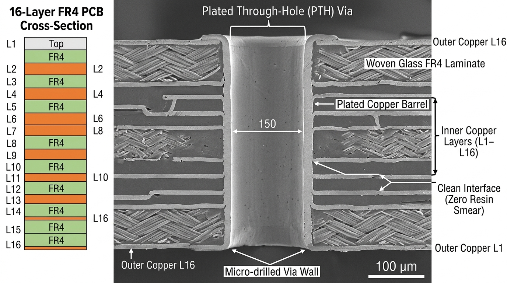
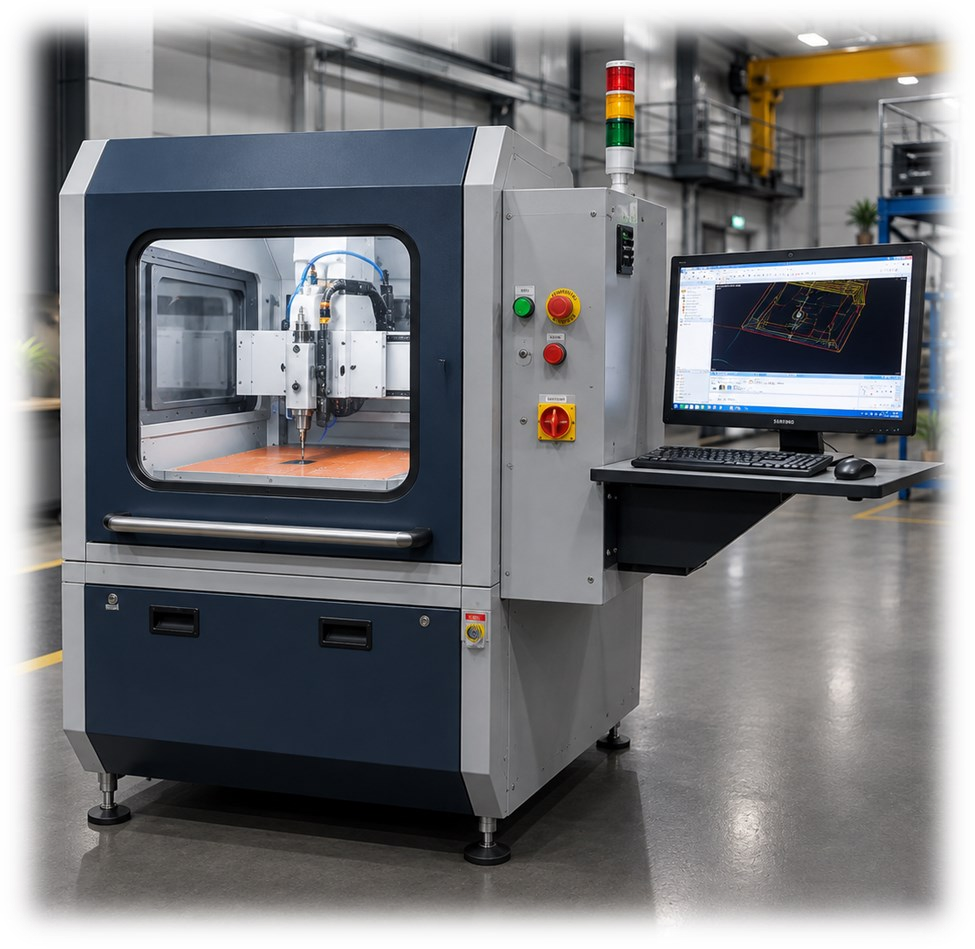
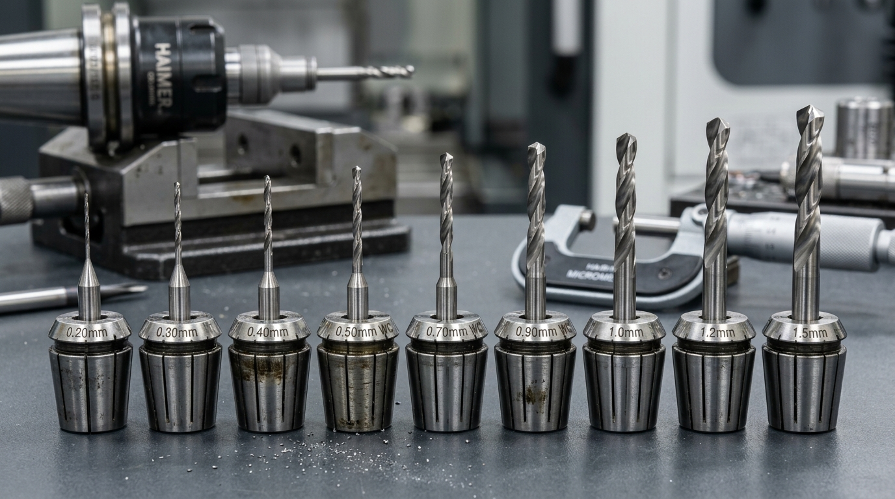

Mechanical PCB drilling remains the most cost-effective and structurally superior method for through-hole vias down to 0.15mm diameter, capable of penetrating thick multi-layer board stacks up to 6.4mm with aspect ratios exceeding 10:1 to 12:1. In contrast, UV and CO2 laser drilling excels exclusively at blind micro-vias (<0.10mm) in thin dielectric build-up layers (<0.15mm deep) with aspect ratios limited to 1:1. For standard FR4, Rogers, and thick copper power electronics, mechanical PCB drilling delivers over 80% lower capital and maintenance costs per drilled hole.
Introduction: The Continuing Hegemony of Mechanical PCB Drilling
In modern printed circuit board manufacturing, engineers frequently debate whether laser micro-via ablation will completely supplant mechanical pcb drilling. While UV and CO2 lasers dominate ultra-high-density interconnect (HDI) smartphones where blind micro-vias must measure below 75µm in single-ply prepreg, mechanical pcb drilling remains the undisputed backbone of 90% of global PCB production.
The physics of material removal explain this reality. Lasers ablate dielectric resin and copper foil through intense photon thermal absorption or photochemical bond-breaking. However, when penetrating multi-layer FR4 boards thicker than 1.0mm containing alternating layers of woven glass fiber and 2oz copper planes, lasers suffer from severe beam divergence, plasma shielding, and heavy glass melt re-deposition. Only high-speed rotary spindle drilling provides perfectly cylindrical, vertical hole barrels with constant diameter across multi-layer board cores up to 6.4mm thick.
At CyTOS Engineering in Pune, we manufacture specialized mechanical through-hole machining systems capable of executing 0.15mm to 6.5mm through-holes at 60,000 RPM. This guide provides an objective engineering comparison between mechanical CNC drilling and laser systems to help factory managers optimize capital equipment investments.

Aspect Ratio and Hole Geometry: Cylindrical vs Tapered Walls
The aspect ratio of a drilled hole is defined as the ratio of total board thickness ($T$) to the finished hole diameter ($D$): AR = T / D. Maintaining vertical, non-tapered barrel walls at high aspect ratios is essential for continuous copper electroplating.
1. Mechanical Drilling Aspect Ratios (Up to 12:1)
In carbide mechanical drilling process, solid micrograin tungsten carbide drills maintain rigid axial stability when supported by proper pressure foot clamping and specialized aluminum entry sheets. A 0.25mm mechanical drill can easily penetrate a 2.4mm thick 8-layer board (aspect ratio 9.6:1) or even a 3.0mm thick board (12:1) with less than 8µm barrel wall taper from top entry to bottom exit.
2. Laser Drilling Aspect Ratios (Strictly 0.75:1 to 1:1)
Laser drilling cannot drill through deep stacks. Because the focused laser spot diverges rapidly outside its Rayleigh range ($z_R$), laser-drilled vias exhibit pronounced trapezoidal taper, where the top entrance diameter is 20% to 35% wider than the bottom target pad. Attempting to laser-drill holes with aspect ratios greater than 1.2:1 results in severe undercut, uneven copper plating voids, and thermal carbonization of the epoxy matrix.

Comprehensive Benchmark: Mechanical vs Laser Drilling Technologies
Below is a direct comparison of operational and financial characteristics between modern mechanical via drilling and industrial UV/CO2 laser drilling systems:
| Operational Parameter | mechanical via drilling (CyTOS PCB60) | UV / CO2 Laser Drilling System | Production Engineering Advantage |
|---|---|---|---|
| Primary Via Capability | Through-holes, component holes, slots, tooling pins | Blind micro-vias, stepped cavity ablation | Mechanical covers 100% of board through-features |
| Hole Diameter Range | 0.15 mm to 6.50 mm | 0.05 mm to 0.15 mm (strictly micro-vias) | Mechanical handles micro to large power connector holes |
| Maximum Board Thickness | Up to 6.4 mm (multistack capable) | < 0.20 mm per laser pass | Mechanical penetrates 32-layer thick backplanes |
| Aspect Ratio Limit | 10:1 to 12:1 | 0.75:1 to 1:1 max | Mechanical maintains vertical plating barrels |
| Capital Equipment Cost | Moderate (₹18L - ₹45L) | Extremely High (₹1.8 Cr - ₹4.5 Cr) | Mechanical offers 70% lower barrier to entry |
| Consumables & Maintenance | Carbide bits, collets, entry/backing sheets | Laser optics, gas refills, optical galvo heads | Mechanical uses standardized off-the-shelf carbide tooling |
| Material Versatility | FR4, Rogers, polyimide, MCPCB, PTFE | Poor on copper & glass (needs dual UV+CO2) | Mechanical drills heavy copper & ceramic composites cleanly |

Barrel Wall Morphology and Plating Adhesion
For high-reliability electronics meeting IPC Class 3 (aerospace and military avionics), the physical condition of the drilled hole barrel determines whether the plated copper barrel survives thermal shock tests (such as 288°C solder float testing).
High-quality rotary spindle drilling at 60,000 RPM creates micro-mechanical tooth roughness on the epoxy glass fibers (typically Ra 0.8µm to 1.5µm). This subtle mechanical tooth provides an ideal anchor profile for electroless copper and direct metallization chemicals. In contrast, laser ablation melts the glass filaments into smooth, glassy nodules that resist chemical copper anchoring, requiring aggressive permanganate desmear and plasma etching cycles to prevent copper barrel blistering.
The Modern Shop Strategy: Hybrid Mechanical + Laser Workflows
Rather than viewing technologies as mutually exclusive, leading PCB manufacturing facilities in Pune, Bengaluru, and Chennai deploy a complementary hybrid workflow:
- Sub-Layer Laser Drilling: UV lasers are utilized during sequential build-up (SBU) to drill 75µm blind micro-vias connecting Layer 1 to Layer 2 and Layer 3 to Layer 4.
- Core Mechanical Drilling: Once the multi-layer core laminates are bonded, a CyTOS mechanical pcb drilling machine performs all through-hole via drilling, ground-plane stitching, connector hole sizing, and outer contour routing across the entire panel stack.
This hybrid division of labor minimizes costly laser machine hours while leveraging high-speed mechanical spindles for heavy material removal, maximizing overall factory profit margins.
Quality Assurance, Metrology & Preventative Maintenance Protocol for Mechanical Pcb Drilling
To guarantee repeatable performance across high-volume production schedules, every mechanical through-hole machining must adhere to rigorous preventive maintenance schedules, metrology calibration standards, and continuous health monitoring. In demanding industrial facilities—such as high-mix electronics assembly lines, aerospace prototyping labs, and automotive tier-1 fabrication centers—small mechanical deviations compound over thousands of operating cycles into premature tool wear, dimensional rejection, and unexpected machine downtime.
1. Dynamic Laser Interferometer Calibration (ISO 230-2 Standards)
Positioning repeatability and linear pitch errors must be verified at scheduled 6-month intervals using multi-axis laser interferometers. At CyTOS Engineering's Pune facility, every machine axis is laser-calibrated across its entire stroke travel, recording pitch, yaw, and Abbe error offsets directly into the CNC controller compensation matrix. This ensures true volumetric positional accuracy within ±0.005mm across all operating temperatures from 18°C to 42°C.
2. Spindle Vibration Spectral Analysis & Thermal Runout Verification
High-frequency electro-spindles require routine vibration spectrum analysis to monitor bearing degradation. By placing triaxial piezoelectric accelerometers on the spindle nose housing, maintenance engineers can detect microscopic race flaking or ball fatigue well before audible noise occurs. For ultra-precision applications, Total Indicated Runout (TIR) must be checked dynamically using non-contact eddy-current displacement sensors at maximum operating RPM, ensuring spindle runout remains strictly below 3µm.
3. Scheduled Lubrication & Pneumatic Seal Purge Maintenance
Linear motion guideways and precision ball screw assemblies require constant, metered lubrication to prevent metallic galling and stick-slip friction. Automated centralized lubrication distributors deliver precise 0.5ml oil pulses every 45 minutes of axis movement. For machines equipped with pneumatic pressure feet or positive-pressure spindle labyrinth seals, clean dry air (ISO 8573-1 Class 1.4.1) must be maintained at 6.0 bar to prevent abrasive dust, composite fibers, or cooling mist from infiltrating sensitive bearing raceways.
| Maintenance Interval | Inspection & Calibration Task | Acceptance Tolerance | Action if Out of Tolerance |
|---|---|---|---|
| Daily (Pre-Shift) | Spindle collet taper cleaning & pneumatic air pressure check | Dry air at 6.0 ± 0.2 bar | Clean collet with brass cone; drain air filter bowl |
| Weekly (Every 50 hrs) | Z-axis backlash & vacuum hold-down seal inspection | Backlash < 0.006mm | Adjust preloaded double-nut or replace vacuum gasketing |
| Monthly (Every 250 hrs) | Dynamic spindle TIR runout & table flatness mapping | TIR < 0.003mm (3µm) | Re-tram spindle mount or re-skim sacrificial matrix bed |
| Bi-Annually (1,500 hrs) | Laser interferometer pitch error & squareness calibration | Volumetric error < ±0.010mm | Reload controller electronic lead-screw compensation |
Furthermore, digital twin telemetry sensors and continuous vibration logging provide predictive maintenance alerts directly to plant SCADA networks, enabling maintenance crews to address micro-wear before cutting accuracy is compromised. Real-time statistical process control monitors dynamic feed rates and power consumption to maintain zero-defect output across high-volume production cycles.
Frequently Asked Questions
Q1: Can mechanical PCB drilling achieve holes smaller than 0.2mm?
Yes. Modern industrial carbide mechanical drilling process machines with ultra-low dynamic runout (<2µm TIR) routinely drill 0.15mm and 0.175mm micro-vias using solid micrograin carbide bits. However, specialized aluminum entry foil and low chip loads are mandatory to prevent flute buckling.
Q2: Why is laser drilling unable to drill through thick copper planes?
Copper has high optical reflectivity in the infrared spectrum (98% reflection for CO2 lasers at 10.6µm) and immense thermal conductivity. The laser energy rapidly dissipates through the copper plane rather than vaporizing it, causing delamination. Mechanical drilling shears copper cleanly regardless of ounce thickness.
Q3: How does hole barrel taper affect PCB soldering and reliability?
Severe taper creates an hourglass or cone-shaped barrel. During electroplating, copper accumulates disproportionately at the wide entrance, starving the narrower center of adequate copper thickness. Under thermal cycling, the thin copper region fractures, leading to open-circuit field failures.
Q4: What is the typical tool life of a 0.3mm mechanical carbide drill bit?
In standard FR4 with high-frequency spindles, a premium carbide micro-drill achieves between 1,500 and 3,000 hits before wear limits are reached. Drills can be repointed once or twice under optical inspection before recycling.
Q5: Which technology is better for Metal Core PCBs (MCPCB) used in LED lighting and automotive headlights?
mechanical via drilling is overwhelmingly preferred for MCPCB. Aluminum and copper baseplates reflect laser energy and create hazardous spatter. CyTOS mechanical drilling machines easily penetrate 1.5mm to 3.0mm aluminum backings cleanly using specialized parabolic flute drills.